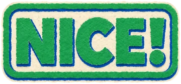
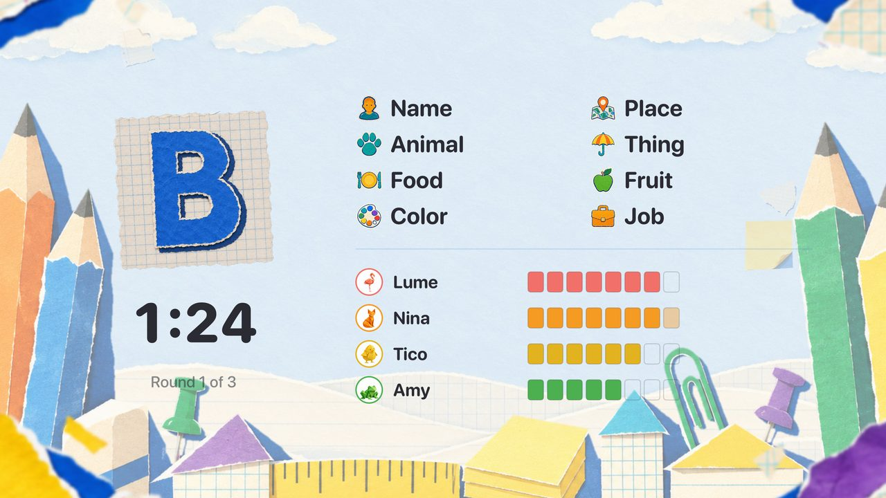
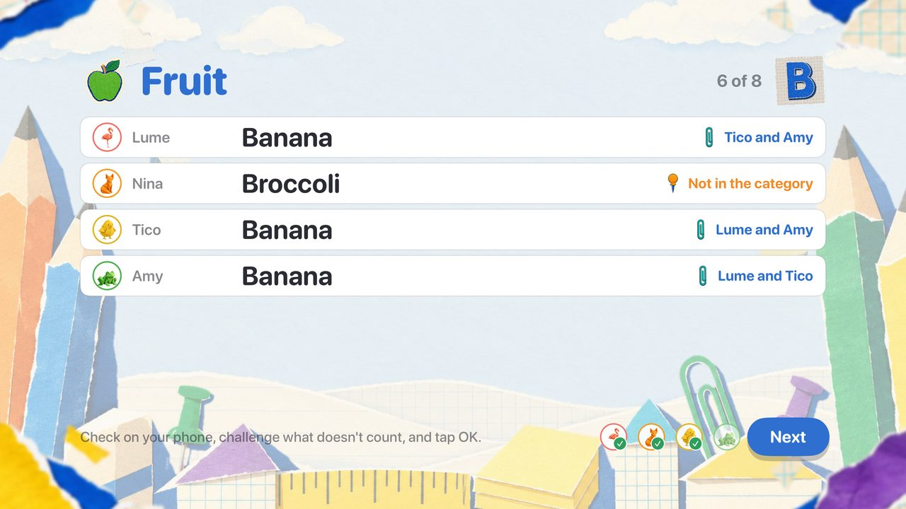
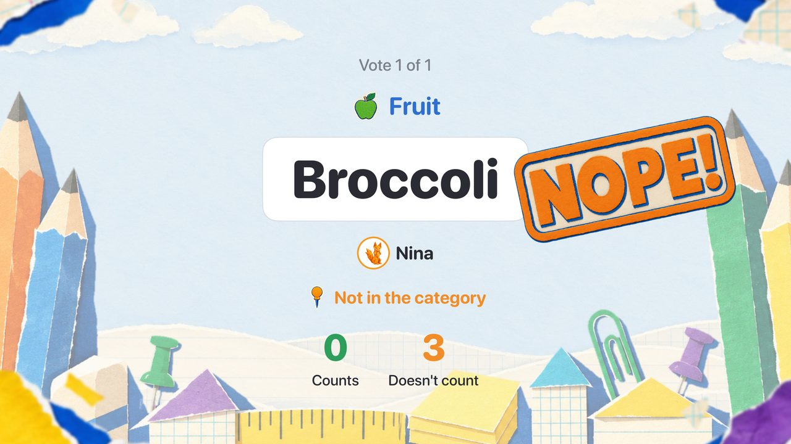
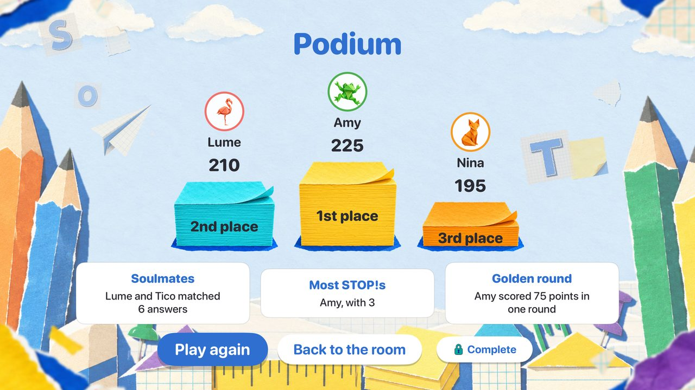
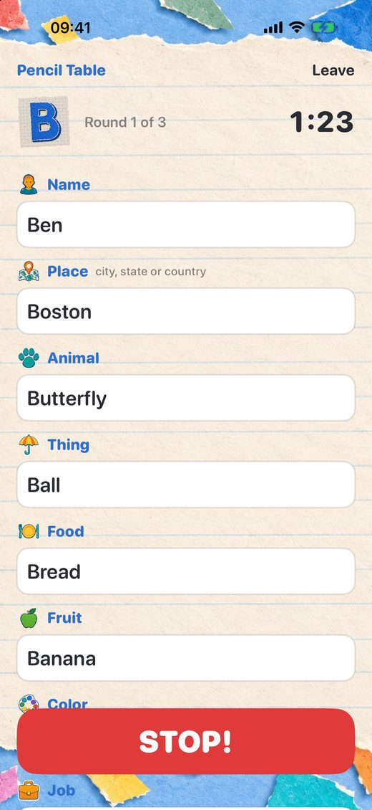
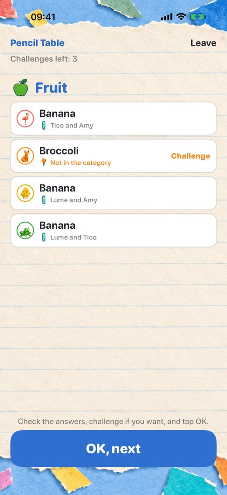
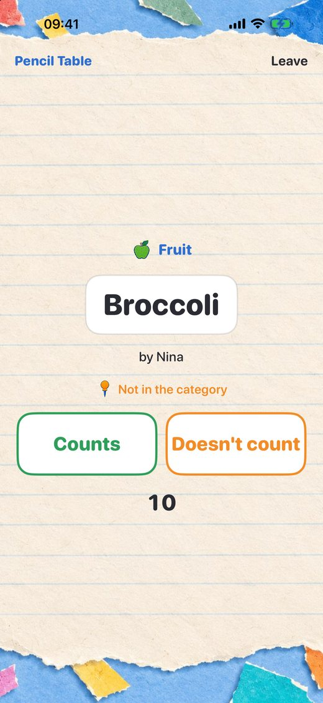

One letter, the categories and a STOP!
The classic pen-and-paper word game, also known as Name, Place, Animal, Thing, for family and friends in the same room. No paper, no pens and no adding up.
The TV is the table
The Apple TV, or an iPad, draws the letter, keeps the time, reveals the answers and adds up the points, for everyone to see together.
Your phone is your sheet
Everyone writes in secret on their own iPhone or iPad. Joining a table takes seconds: no accounts, no internet, just the same Wi‑Fi.

The group decides
Spotted a dubious answer? Challenge it from your phone. Everyone votes, and the table stamps it: NICE! or NOPE!
Stop, Stop! Complete
One purchase unlocks the whole room: over 50 more categories, the Surprise and Lightning modes, every setting and your own categories.







How to play
Open Stop, Stop! on the Apple TV and choose New game (on an iPad, tap Be the table). Each player opens Stop, Stop! on their iPhone or iPad, types a name and taps the table. Once everyone is ready, the game begins.
- The table draws a letter.
Everyone sees the letter on the TV, and the categories show up on each phone: Name, Place, Animal, Thing, Food, Fruit, Color and Job. - Everyone writes in secret.
Every answer starts with the letter. Once you have filled in enough, you may hit STOP!, and everyone's answers lock a few seconds later. If the time runs out first, what is written counts. - The table reveals the answers.
One category at a time. Equal answers are grouped, and a wrong letter scores nothing. Spotted a dubious answer? Tap Challenge on your phone. - The group votes.
Each challenged answer goes to a vote: Counts or Doesn't count. It falls with more than half of the votes of those who may vote (and at least 2). A tie keeps the answer. Whoever wrote it may give in: Fine, it doesn't count. - Points.
10 for an answer of your own, 5 for an answer someone else also gave, and 0 for an empty one, a wrong letter or an answer voted down.
After the last round, the podium. When in doubt, it counts!
Help
Everything you need for a good game night.
What do I need to play?
A table, which is an Apple TV or an iPad, and an iPhone or iPad with Stop, Stop! for each player, all on the same Wi‑Fi network. No internet connection or account is needed. Someone without a device can play as a team with someone else.
How many players?
From 2 to 8.
Can the table be an iPad?
Yes. Open Stop, Stop! on the iPad, tap Be the table and lay the iPad where everyone can see it. It does everything the Apple TV does, by touch.
My phone can't find the table.
- Make sure the phone and the table are on the same Wi‑Fi network. Guest networks, some hotels and some mesh systems keep devices from seeing each other.
- Stop, Stop! needs the Local Network permission to find the table: open Settings › Privacy & Security › Local Network and turn on Stop, Stop!.
- The table must be open: on the Apple TV, choose New game; on an iPad, Be the table.
When can I hit STOP!?
Once you have filled in the game's minimum number of categories: that is when the STOP! button lights up on your phone. After the STOP!, the others still get a few seconds to finish the word they were writing.
Someone left in the middle of a game.
Their seat waits for them, with their points. They just open Stop, Stop! again on the same device and tap the table.
What is Stop, Stop! Complete?
A one-time purchase that unlocks the whole room: if the table or any player has Complete, everyone plays with it. It brings over 50 more categories in themes, the Surprise mode (new categories every round) and the Lightning mode (4 categories, 30 seconds, 5 rounds), rounds, time and rules your way, your own categories, made on your phone, and saved sets of settings on the table. Buy it on the Apple TV's home screen or on your phone. With Family Sharing, the whole family has it.
How do I restore my purchase?
Open the Stop, Stop! Complete screen and tap Restore purchases. Purchases belong to your Apple Account and work on the Apple TV, iPhone and iPad.
How do I leave a table?
On the Apple TV, press Menu (or Back) on the remote. On a phone, tap Leave at the top of the screen.
Which languages?
English and Portuguese, following your device's language. The letters and the categories follow the table's language.
Something isn't working right.
Close Stop, Stop! on the table and on the phones and open it again. If the problem persists, write to us with your device models and their system versions. We read every message.
Talk to us
Questions, ideas for categories, or a bug that slipped away? We'd love to hear from you.
stopstop@alysoft.com.br